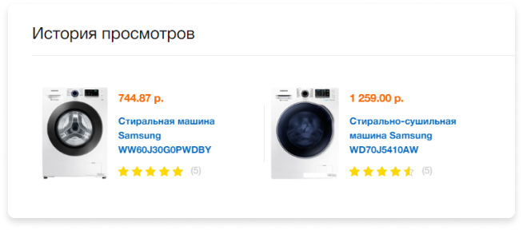
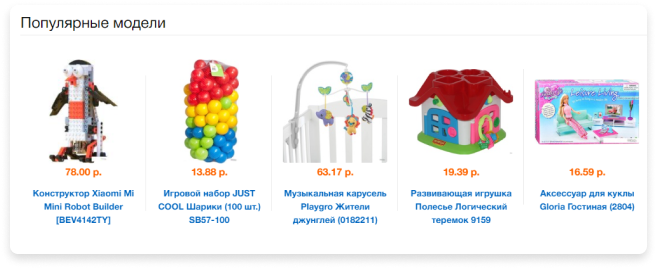
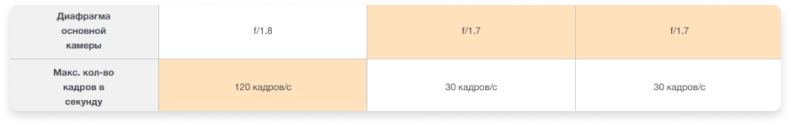

Разработка интернет-гипермакета TTN.by
Для этого проекта мы использовали фреймворк Yii — потому что хорошо его знаем и потому что он один из самых быстрых.
Для частичной экономии времени, чтобы не собирать заново базовые вещи вроде Access control, хранение товаров, и административную панель мы подобрали собранный на Yii2 движок магазина. Выбор пал на платформу DotPlant.
Изначально клиент хотел использовать для сайта движок 1С-Битрикс. К счастью, нам удалось его отговорить. Пускай и не с первого раза.
Была попытка запуска на движке Битрикс, но выяснилось, что на такие объемы товарного каталога он не рассчитан. Поэтому все касающееся каталога пришлось бы переписать, а это нивелировало все преимущества движка: обновления, модули, интеграции из коробки и магазин приложений.
Планируем архитектуру проекта
В основе бэкенда DotPlant, он написан на Yii2 с использованием БД MySQL. В архитектуру сразу нужно было закладывать множество импортов разного назначения.
Второй особенностью проекта была работа с фильтром.
Для гипермакета крайне важно создать удобный подборщик, а это значит, что нужно было решить, как это всё будет управляться. Нужно было реализовать следующий функционал:
- По каким свойства фильтруем в принципе
- Какие свойства показываем сразу, какие скрываем в «дополнительно» и в каком порядке
- Какие значения списочных свойств показываем сразу, а какие прячем в «остальные варианты»
- На какие из значений списочных свойств делаем акцент в дизайне (выделение жирным)
- Как параметр должен выглядеть в фильтре: ползунок, поле ввода, селект, чекбоксы
- Возможность создания комбинированных списков: чекбоксы и поле ввода значения
- Задавать max-min для числовых характеристик
- Подсказки в фильтре для характеристик
Планируем дорожную карту
Проект объемный, поэтому работа велась по гибкой методологии. В основе — разбивка на этапы, объёмом не более 100 часов. Первичный план содержал 10 этапов. Примерная разбивка этапов была такой:
- Импорты каталогов со старого движка на новый
- Настройка поискового индекса для отображения каталога, остальные импорты
- Реализация отзывов, сравнение товаров
- Корзина, оформление заказов
- Личный кабинет
- Наполнение каталога, шлифовка работы с каталогом и фильтрами
- Выбор и доработка шаблонов
Как вы могли заметить, дизайном мы занялись только на седьмом этапе 😳, спустя порядка 600 часов разработки.
На практике спринт/этап выглядит так:
Готовим шаблон
Мы не планировали разрабатывать уникальный дизайн, так как в этом нет особого смысла. Для проекта главное — грамотный UX, функционал, надежность и быстродействие.
Для экономии мы использовали готовые html-шаблоны для гипермаркетов и отталкиваясь от них, делали доработки уже под нашу структуру и функционал командой дизайнера и верстальщика. В среднем нам удалось сэкономить на этом не меньше 200 часов.
Шаблоны дорабатывали и отдавали на приёмку сразу в html.
UX — формируем положительный опыт использования
Пользователи оценили внимание:
Шаблонами все вопросы не закрыть, поэтому некоторые вещи приходилось собирать с чистого листа.
Оформление заказа одной страницей, сразу в корзине. Не нужно бегать по отдельным страницам.
При том, что оформление заказа нельзя назвать урезанным:
- Промо-коды к корзине
- Дисконтная-карта
- Список самовывозов прямо на карте
- Удобное время доставки
- Различные типы оплаты
Для работы с удобным временем доставки на бэкенде была реализована целая система возможности доставки магазином в определенные промежутки, которая отражают реальную загруженность компании с учетом региональности (ttn.by работает на всю Беларусь).
90% обращений с сайтом через поиск
Он должен быстро находить и сразу подсказывать, что искать или где.
У клиента много отзывов, важно было их сохранить и перенести на новый сайт
Магазин помнит, что вы просматривали, если нужно что-то вспомнить, в личном кабинете есть история.
Часто заказываете на разные адреса?
Внесите в личном кабинете несколько адресов и выбирайте при заказе нужный.
Клиент ежемесячно делал выборки по популярным товарам и выгружал рейтинги, по которым мы формировали топ, который подсказывает, что пользуется спросом.
Не просто сравнение, а сравнение с выделением побед. Для этого у клиента в админке есть специальная возможность для настройки «лучших» характеристик.
Для каждого раздела настраиваются свои ключевые характеристики для вывода их в листинге товаров.
Фильтруем по-умному
Главной фишкой нового сайта должен был стать фильтр
Клиент хотел, чтобы все значения товаров просчитывались наперед и показывались все возможное комбинации. При этом фильтр уже должен учитывать ранее выбранные значения.
Путей решения данной задачи несколько:
Первый — это просчитать все возможные цифры заранее. Проблема в том, что комбинаций огромное множество, и считать это всё наперед заняло бы прилично процессорного времени.
Второй вариант, считать это динамически. То есть фактически при каждой загрузке страницы по каждому из доступных значений характеристик товара нужно было запустить поиск и посчитать количество найденных товаров. Но если это делать через MySQL и PHP, который не умеет работать в многопоточном режиме, то наши тесты показали, что один такой запрос на самую большую категорию ноутбуки, с 16 тысячами товаров, занимал 30-40 секунд
Мы решили доработать архитектуру поиска данных значений:
Как итог, ttn.by который смог
Чтобы вывести цифры для производителей, скрипт должен вызвать 5 раз поиск по каждому из них.